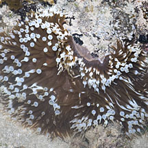
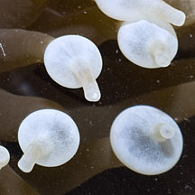
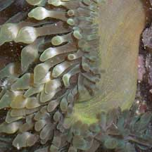
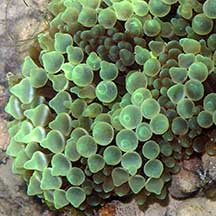
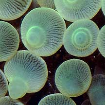
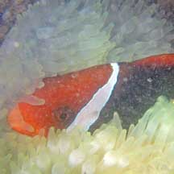
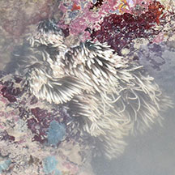
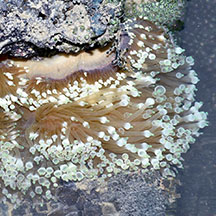
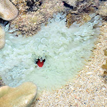

|
|
| sea anemones text index | photo index |
| Phylum Cnidaria > Class Anthozoa > Subclass Zoantharia/Hexacorallia > Order Actiniaria |
| Bubble-tip
anemone Entacmaea quadricolor Family Actiniidae updated July 2024
Where seen? This anemone with bulbous tips is seen on our Southern shores. Usually nestled among coral rubble with the body column deep in a crevice or hole and only the tentacles sticking out. Thus, it is often mistaken for a hard coral. Sometimes, several small ones are seen clustered together. Larger ones are usually alone, and found in deeper water. Features: Diameter of anemone with tentacles extended 10-20cm although large ones about 30-40cm have been seen. Tentacles 4-6cm long. The tentacles may have bulbous tips (although not always). There may be a white 'equator' around the bulbous portion. When not inflated, the tip is then blunt with a white ring where the 'equator' would be. According to Dr Fautin, the bulbous tip seems related to presence of anemonefish, and can disappear. Body column smooth with no verrucae, colour brown, reddish or orange, but is rarely seen as it is usually deeply inserted into crevices. It has a small pedal disc. Be careful! Like other anemones, this anemone has stingers in its tentacles that can inflict a painful sting. |
|
 Terumbu Semakau, Jun 12  |
 Sisters Island, Jun 07  |
 Sisters Islands, Apr 04  |
| Bubble friends: The anemone harbours
symbiotic algae (called zooxanthellae) that produces food through
photosynthesis. The food produced is shared with the anemone, which
in turn provides the algae with shelter and minerals. During mass coral bleaching events, this anemone is often the first to bleach. Several kinds of animals are said to live happily among and unharmed by the tentacles of bubble tip anemones. These include Peacock-tail aemone shrimps (Periclimenes brevicarpalis) these fishes: Dascyllus trimaculatus and Premnas biaculeatus and anemonefishes (Amphiprion sp.) including A. akindynos, A. biaculeatus, A. bicinctus, A. chrysopterus, A. clarkii, A. ephippium, A. frenatus (Tomato anemonefish), A. fuscocaudatus, A. latezonatus, A. melanopus, A. polymnus (juvenile). So far, only the Tomato anemonefish has been seen on the bubble tip anemones on the intertidal. Status and threats: As at 2024, it is assessed not to be approaching the criteria for being listed among the threatened animals in Singapore. |
 Peacock-tail anemone shrimps were seen in this anemone. Sisters Island, Dec 12 Photo shared by Loh Kok Sheng on flickr. |
| Human uses: Unfortunately, this
beautiful anemone is collected for the live aquarium trade. Status and threats: As at 2024, it is assessed not to be approaching the criteria for being listed among the threatened animals in Singapore. But the anemone fishes that rely on them are on the Red List. However, like other animals harvested for the live aquarium trade, most die before they can reach the retailers. Without professional care, most die soon after they are sold. Those that do survive are unlikely to breed successfully. |
| Bubble-tip anemones on Singapore shores |
On wildsingapore
flickr
|
| Other sightings on Singapore shores |
 In a bleaching anemone. Tanah Merah, Jun 10 Photo shared by Loh Kok Sheng on his flickr. |
 Sentosa Serapong, May 17 |
 Pulau Semakau East, Jun 25 Photo shared by Loh Kok Sheng on facebook. |
 Bleaching. Teumbu Pempang Laut, Aug 16 Photo shared by Loh Kok Sheng on facebook. |
Links
References
|